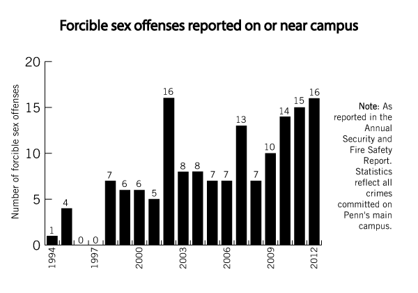
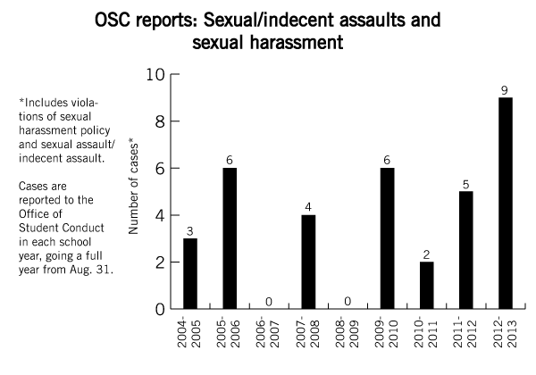

Going by the official numbers, it would seem sexual assault barely ever happens at Penn.
Sixteen forcible sex offenses were reported in 2012. Fifteen in 2011. Fourteen in 2010. Ten in 2009.
For a university with more than 20,000 students and thousands of employees, the numbers are staggeringly low.
But, like at most colleges, the actual rate of sexual violence at Penn is much higher than the numbers reveal. A recent Daily Pennsylvanian poll found that only a quarter of the most recent sexual assaults that students knew about were reported either to police or to campus officials — though the true rate is likely even lower due to uncertainty over whether certain experiences qualify as sexual assault.
Penn is vulnerable to the societal forces that make rape and sexual assault a largely underreported crime. Not wanting to relive the experience step-by-step discourages victims from going to the police or filing student conduct complaints. Shame and guilt over being victimized also drive reporting rates down.
The University takes abundant measures to support victims who do choose to come forward, administrators say. Still, some students who report the crime are left feeling unsatisfied with the outcome — a fact that further discourages reporting.
The only solution, student leaders and administrators say, is to buck the cultural forces that make victims stay silent and create a climate where victims of sexual violence are not afraid to speak out.
Michelle’s rape won’t show up in next year’s statistics.
In the spring, Michelle, currently a senior, was out with friends at Smokey Joe’s — a popular campus bar on 40th Street. She walked home with a guy she hadn’t spoken to since her freshman year.
“We went up to his room, started kissing and I fell asleep,” she recalled. “I remember having these crazy dreams about having sex and needing a condom, but when I woke up I realized that this boy was actually having sex with me. I have no idea how long it lasted, and I kept asking him to stop, which he only did when I started to drunkenly yell at him.”
Michelle, like the other victims of sexual violence interviewed for this series, requested that her name be changed to protect her identity.
After that night, Michelle didn’t tell her friends. This was the second time she was raped at Penn, she said. While her friends helped her cope the first time, a year earlier — a story that appeared in a previous DP article in this series — she chose to stay silent this time. She didn’t want to further burden her friends, especially because several of them had been victims of sexual violence themselves.
Michelle didn’t call the police. She didn’t seek help from Penn, either.
“I wanted to forget about it. For me, it would be too emotionally trying to state what happened fact-for-fact to the police,” she said.
Re-traumatization is a constant concern for investigators of sexual violence. Students and staff involved in handling such cases are trained in how to avoid re-traumatizing victims of sexual violence, said Michele Goldfarb, director of the Office of Student Conduct, the arm of the University responsible for enforcing the student conduct code. Staff at OSC have participated in nine sexual violence-related training sessions since 2010, many of which are online seminars, she added.
Part of the training, she said, is learning the dynamics of sexual assault on college campuses — including the low reporting rates.
“Everybody understands that it’s an underreported matter on college campuses,” Goldfarb said.
In this regard, Penn is no different than most universities. Across college campuses, reporting rates for sexual violence are low. In 2000, a comprehensive study funded by the Department of Justice found that fewer than 5 percent of female college students who experienced either rape or attempted rape reported the incident to police.
In the DP poll, “shame or guilt” was the most common reason students said sexual violence goes unreported — outpacing the next most-common response, uncertainty over whether what one experienced was sexual assault, by 12 percentage points.
“The culture has perpetuated this system of victim-blaming, which is harmful because victims sometimes think it’s their fault it happened and feel like they can’t tell people,” said College junior Joanna Kamhi, chair of Abuse and Sexual Assault Prevention, a peer anti-violence advocacy group. “There’s a lot of shame.”
Students are bound to abide by Penn’s sexual violence policy, and OSC serves as the University’s judicial arm when students are accused of violating policy.
The presence of a system to address sexual violence is mandated by federal law. Title IX, a 1972 amendment to the Higher Education Act, requires that colleges not discriminate on the basis of sex. Because sexual violence disrupts victims’ education, schools must take measures to protect victims of sexual violence, the law mandates.
However, universities in general are in a tight position when it comes to punishing sexual violence.
“This is a really serious crime, and university resources are kind of limited in what they can do,” Carol Tracy, the executive director of the Women’s Law Project and a former director of the Penn Women's Center, said. “The worst they can do is expel somebody.”
Several institutions, such as Yale University and the University of North Carolina, have been rattled by accusations that some students have received only a slap on the wrist for sexual assault.
Penn’s OSC is cognizant of the current climate in higher education, Goldfarb said, but “the best thing to protect against those kinds of accusations is to be full and fair and consistent and serious about your process.”
Brian, a student in the College, experienced the Office of Student Conduct’s process firsthand.
In January, Brian went to a fraternity event with his roommate.
Both he and his roommate were drinking, and Brian ended up blacking out. His roommate and his friends dropped him off in his room and he went to sleep.
“Later in the night, he came in and was alone and saw that I was intoxicated in my bed and sexually assaulted me,” Brian said. “I did wake up, but it was to the point where I was so intoxicated and so weak, I remember trying to fight but not being able to.”
Two or three days later, after going to the police, he filed a case against his now-former roommate with OSC.
In the beginning, he said, he was encouraged. Penn Police explained that there was a better chance an OSC case would be successful than a case in the legal system, due to the lower standard of proof required to impose punishment.
After the federal Department of Education issued new Title IX guidelines in the form of an April 2011 “Dear Colleague” letter, colleges across the nation changed the evidence standard used in student disciplinary cases involving sexual violence. At Penn, the standard previously had been “clear and convincing evidence” — meaning that OSC staff and hearing panel members had to be very confident a violation of policy occurred to find a student guilty. In July 2012, that was lessened to “preponderance of the evidence,” a standard commonly used in civil rights cases that is akin to being 51 percent sure a violation occurred to impose punishment.
His assailant was found “responsible,” the OSC equivalent of being found guilty. His former roommate’s punishment, Brian said, was that he was no longer allowed to talk to Brian — a “probation.”
He was disappointed the sanction wasn’t harsher. “It made me feel like if I did that to someone, nothing would happen,” he said.
Brian, who recounted his experience in a DP guest column in April, had to move in the middle of the year after the assault, he said. He stopped pledging a fraternity because he was uncomfortable that his former roommate was in the same one. He often sees his attacker around campus.
Brian is currently in talks with the Philadelphia Police Special Victims Unit about possibly pursuing a criminal case. He praised the Division of Public Safety’s Special Services, which served as an advocate for him in dealing with the courts and with Philadelphia police, and Counseling and Psychological Services.
Brian’s story illustrates the fine line that OSC must walk between being sensitive toward victims of sexual assault and protecting the rights of those accused — which has the potential to leave both sides dissatisfied with the outcome.
“I’ve seen it play out all different types of ways, not always in favor of what the victim wants in terms of holding the perpetrator accountable,” said Nina Harris, a former violence prevention educator at the Penn Women’s Center.
While the University employs an overall victim-centered approach, it is still obligated to uphold due process in its decisions. Critics of the new Title IX guidance have argued that the preponderance of evidence standard sets an unfairly low bar for proving a charge as serious as sexual violence.
In Brian’s case, the evidence standard wasn’t enough to make him feel justice had been served.
“At least I got the validation that they believe what happened to me,” Brian said.
There is no single, standard sanction given for perpetrators of sexual violence — nor any other breach of the student conduct code — at the University.
For this article, the DP requested details — with identifying information redacted — about specific cases of sexual violence over the past two academic years, including a description of the case and the sanction given. OSC declined the request, citing confidentiality concerns.
“To comply with your request, we would either have to overly generalize with respect to the nature of each offense, which would be both misleading and unhelpful, or we would have to disclose a good deal of additional detail,” Goldfarb wrote in an Oct. 4 letter responding to the DP’s request. “Adequate details regarding the complexity of each case … could not be shared without running the unacceptable risk of breaching our students’ confidentiality and expectations of privacy.”
Cases in the University judicial system can result in a range of outcomes, from OSC dropping the case to “sanctions of probation or a lengthy suspension or a permanent separation from the University,” the letter read. The factors that determine the punishment given in any given case include “the specific facts of the incident, the student’s intent and degree of intentionality, the student’s candor or lack thereof, the student’s willingness to accept responsibility, a student’s prior disciplinary history, the level of threat or violence present and the severity of the harm caused and previous sanctions imposed in similar, comparable cases,” according to the letter.
For their part, officials involved with student conduct investigations emphasized the importance of following the procedures laid out in the disciplinary charter and applying them in a fair, consistent manner.
“All of us who are involved in one aspect or another with the student disciplinary system want to make sure that it adheres to the charter, which reflects Title IX,” said Paul Sniegowski, a biology professor who oversees hearings at OSC as disciplinary hearing officer. “We strive always to stick to those procedures which the University community has agreed upon in the charter.”
The University has an extensive network of confidential support centers to increase students’ confidence with reporting sexual violence. The Penn Women’s Center, Counseling and Psychological Services and Student Intervention Services, among others, all offer guidance and support for victims.
Especially important in navigating the system is Special Services, which provides a victim advocate for every victim of sexual assault.
“Every step of the way, no matter what entity they go to, whenever they step out of the building, we’re with them,” Patricia Brennan, director of Special Services, said. “We try to navigate the system for them so they don’t get caught up in a mess.”
At an institution like Penn, where resources are decentralized in a number of offices, collaboration is particularly important, administrators say.
“If there’s something that distinguishes Penn at the moment from other institutions, it is that the network of offices that have to coordinate, do coordinate well on a regular basis,” Provost Vincent Price said.
But the DP poll shows that, despite the range of places for victims of sexual violence to go, Penn undergraduates are under-informed about what resources exist on campus — a fact that could contribute to underreporting. Only a fifth of undergraduates said they knew a rape victim advocate was available on campus.
Regardless of how a victim comes in contact with the University support system, administrators say, students will learn about all the resources available.
“If you go to Special Services first, they will probably, in a very short number of hours, refer you to CAPS,” CAPS Director Bill Alexander said. “The same with Women’s Health. And if you go to CAPS, you may be referred to Special Services.”
The solution to low reporting rates, administrators and student leaders agreed, is not merely to encourage victims to go to police or campus officials directly. They emphasized that in supporting people who have experienced sexual assault, giving the victim control is key. It’s not the advocate’s role to tell the victim what to do, they say.
But the thorny issue remains that sexual violence is vastly underreported, so there are no reliable statistics of how many sexual assaults happen each year at Penn. The only way to make the reports mirror the prevalence, campus leaders agreed, is to address the underlying issues that lead to low rates of reporting across the board — to create a climate in which victims are not afraid to come forward.
“How can we get things more reported? The answer is definitely not going to be telling people to report more,” said Jeremy Pincus, College senior and president of the all-male violence prevention group One in Four. “The answer is a cultural shift. The answer is creating a community and a culture where it’s acceptable to talk about this stuff, where you’re not perceived as damaged goods or weird or weak if you’re sexually assaulted or raped.”
Will Marble can be reached at marble@thedp.com.
comments powered by Disqus